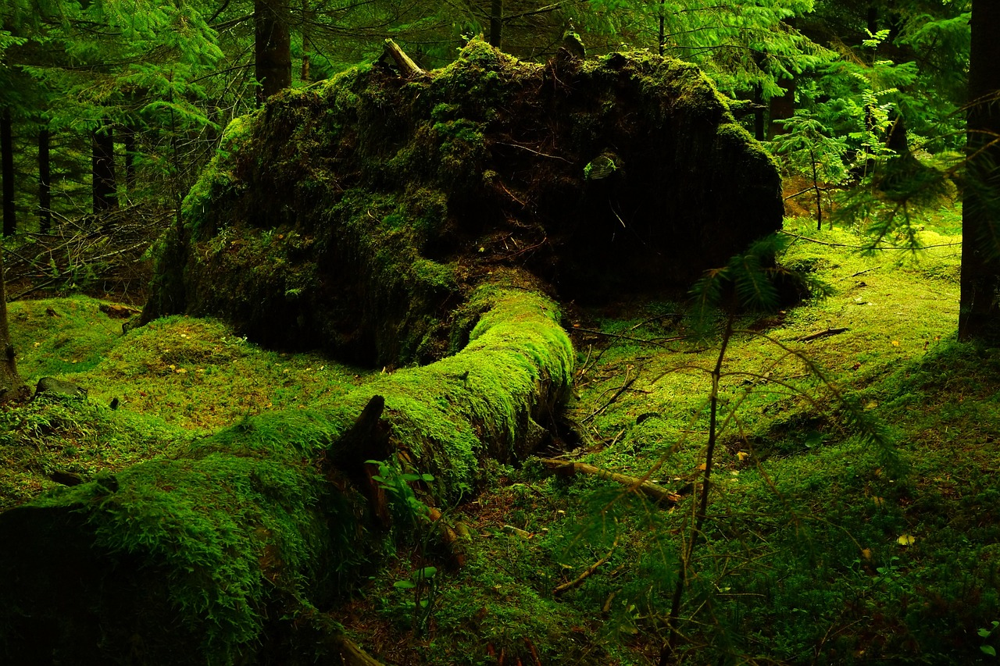
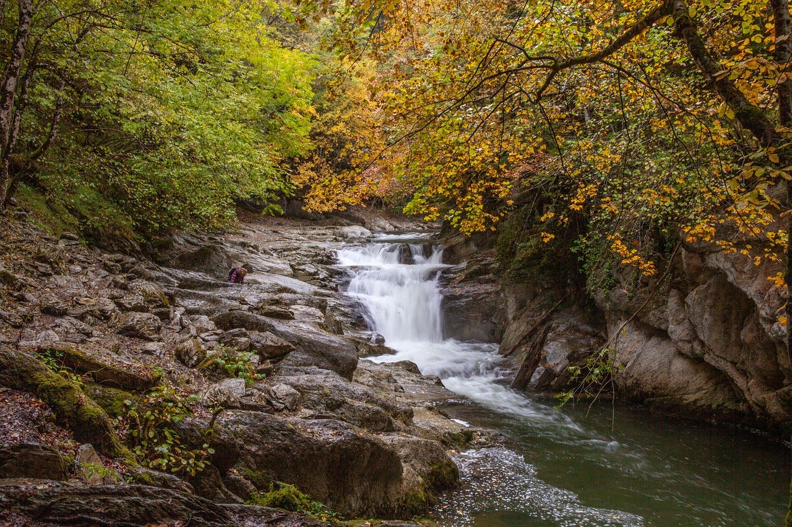
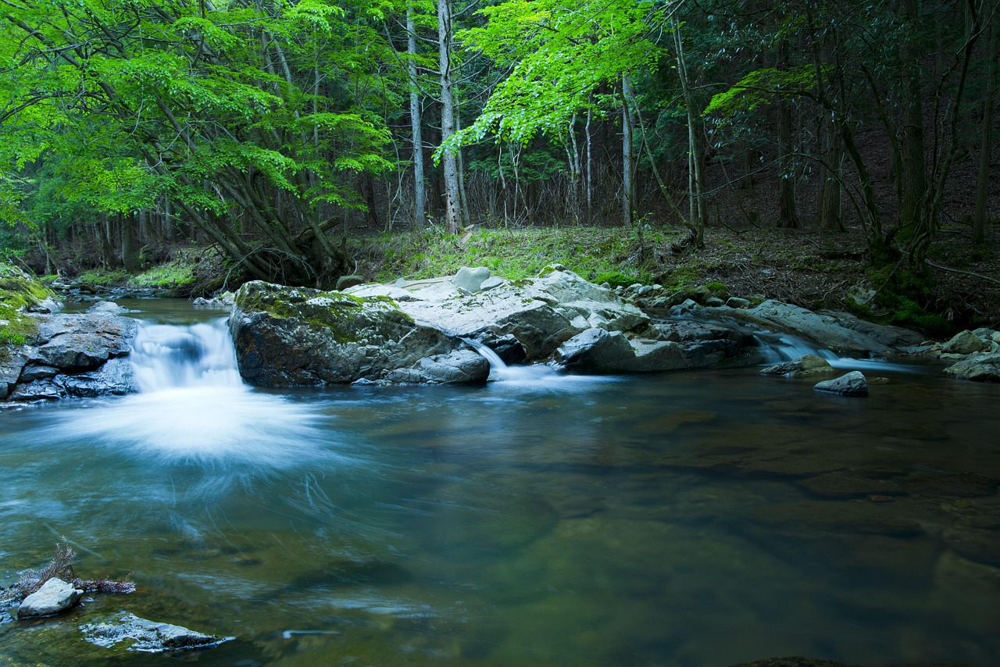
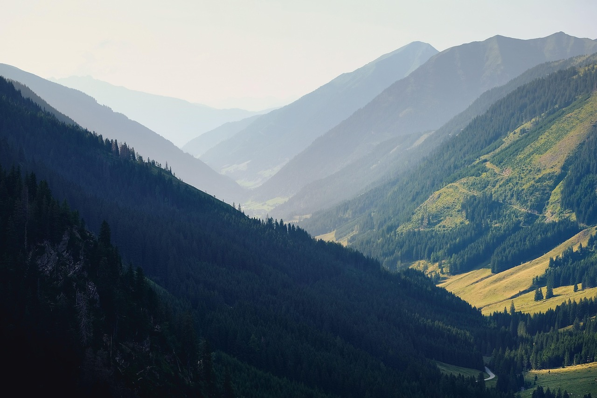

重要なお知らせ
現在の登山道状況について
大雨の影響により、一部の清流ルートが通行止めとなっています。事前に情報をご確認ください。
コラム
四季が織りなす山の表情
春の芽吹き、夏の深緑、秋の紅葉、冬の銀世界。山は毎日違う姿を私たちに見せてくれます。
アクティビティー





自然が紡ぐ、圧倒的な美しさと静寂に触れる旅。
大雨の影響により、一部の清流ルートが通行止めとなっています。事前に情報をご確認ください。
春の芽吹き、夏の深緑、秋の紅葉、冬の銀世界。山は毎日違う姿を私たちに見せてくれます。



